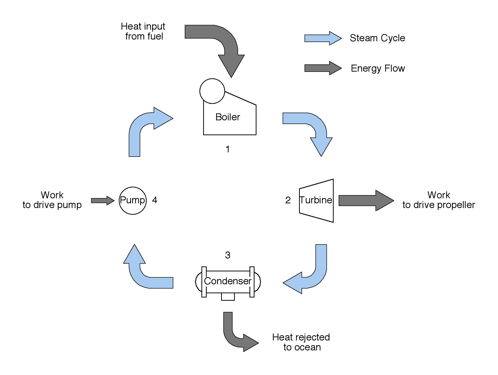
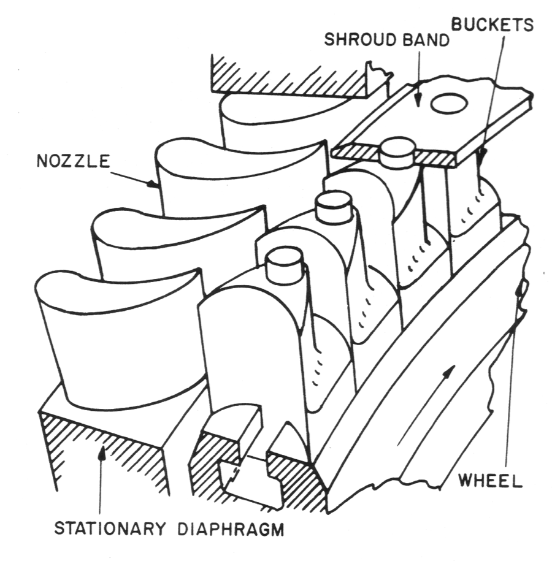

Section 1.1 Basic Steam Cycle
Figure 1.1.1 shows a very simplified version of the steam cycle, which is an appropriate starting point for our discussion of ship’s propulsion.
The steam cycle is an example of what is known by engineers as a cyclic heat engine. It is called cyclic, because it operates on a cycle. It uses a working fluid, water, which travels from point to point through the cycle, changing form and carrying energy, but eventually returning to the starting point restored to the same state that it started with. It is called a heat engine, because it transforms heat, which is a form of energy, into work, another form of energy. The thermodynamic name for this cycle is the Rankine Cycle.
The steam cycle consists of four stages
- generation
- expansion
- condensation
- recovery

Since this is a cycle, it has no beginning or end, but we have to start somewhere, so let’s begin with the generation stage.
Generation.
Steam generation occurs in the boiler. The boiler is simply a device used to boil water. Like a tea-kettle on the stove, it contains liquid water and a heat source. As the water is heated, its temperature rises and soon it begins to boil. On the stove, the water vapor or steam rises and dissipates into the kitchen, but not so in a boiler. The boiler is a closed vessel, like a pot with a lid, and any steam generated in the boiler rises to the top and is collected before being sent on to the next step of the cycle.
In the generation stage, the chemical energy stored in the ship’s fuel is released when the fuel is burned in the boiler furnace, and some of this energy is transferred to the working fluid – the water. The water gains energy, and we can detect this in two ways: the water’s temperature goes up, and the water changes state from a liquid into water vapor, which we call steam. Steam leaves the boiler at high pressure and high temperature.
As we will learn in
[cross-reference to target(s) "thermodynamics" missing or not unique], heat energy which raises the temperature of a substance such as water or steam is sometimes called sensible heat while the heat energy that actually boils the substance is called latent heat.You probably remember that water boils at 212 °F at standard atmospheric pressure (14.7 psia). If you put a thermometer into a pan of water boiling on the stove, this is what it will read. Even if you turn the flame up to add more heat energy, you won’t be able to make the water temperature rise above 212 °F. This is because you are adding latent heat, which is not reflected by an increase in the water’s temperature. All of the heat energy is being used to turn the liquid water into a vapor.
The boiling or condensing temperature of a liquid is known as its saturation temperature. The saturation temperature for a particular liquid is determined by its pressure, and cannot be changed. For example, 212 °F is the saturation temperature for water at atmospheric pressure, and there is nothing anybody can do to change it.
In order to reach high steam temperatures, which is necessary for high steam cycle efficiency, the boiler must be operated at a pressure far above atmospheric pressure. A typical marine boiler operates at about 600 psi while some have operated as high as 1200 psi, although this introduces additional maintenance difficulties. Shoreside steam power plants operate at 3000 psi or even higher.
Steam temperature is raised even further by superheating the steam. Superheating steam raises its temperature above the saturation temperature for the corresponding steam pressure by continuing to add heat to the steam after it has completely vaporized. This must take place in a separate area, called the superheater, away from liquid water, or the additional heat would simply boil more water rather than superheating the steam. Superheated steam is said to be dry, which means that all liquid water has vaporized and it contains no moisture droplets. Drops of liquid water would damage the turbine in the expansion step described below.
Improving efficiency is a major concern of mechanical and marine engineers. High efficiency means that fuel is not wasted, and operating costs are minimized. Practical boiler designs incorporate many techniques to maximize efficiency. For example, not all of the chemical energy originally contained by the fuel ends up transferred to the steam. A large portion of this energy is lost up the smokestack, carried away by the combustion gases. Practical boilers usually contain some sort of heat exchanger in the smokestack in an effort to recover some of this energy.
Expansion.
The thermal energy added to the working fluid in the generation stage is converted to mechanical energy, or work, in the expansion stage. This work is produced in the form of a rotating turbine shaft which drives the propeller and moves the ship through the water. The more energy we can remove at this stage, the higher the efficiency of the steam cycle. Unfortunately, it is not possible to remove all the energy from the steam in the turbine. Some energy remains in the steam and is carried to the next stage of the cycle.
A turbine is the device used to accomplish the energy transformation in the expansion stage. Like a pinwheel or a fan, a turbine has a freely rotating shaft with many carefully designed turbine blades attached. However, unlike a fan, the turbine rotor is completely enclosed in a casing which also contains nozzles and stationary blades designed to direct the steam towards the rotating blades.

High-pressure, high-temperature steam passes through the nozzle, which has a very small opening, and it emerges with a high velocity. The thermal energy of the steam is converted into mechanical kinetic energy in the nozzle. This high velocity steam jet hits the blades and imparts a turning torque to the rotor shaft and converts its kinetic energy to rotational kinetic energy of the shaft. Most turbines have several rows of blades, forming multiple stages to extract the maximum energy from the steam. As the steam gives up its thermal energy, its temperature and pressure both drop. The steam leaves the turbine at a low temperature and low pressure.
High steam pressure at the inlet to the turbine is important for energy conversion, but it is equally important to have a low pressure at the turbine outlet. Steam, or any fluid for that matter, will only flow from high pressure to lower pressure. Without a pressure drop across the blades of the turbine, there would be no steam flow, and no energy conversion. To maximize the energy conversion, we must also maximize the pressure drop across the turbine.
Condensation.
As stated previously, a large pressure drop across the turbine is required to get maximum energy extraction from the steam. The boiler supplies the high pressure at the inlet to the turbine, it is the job of the condenser to create a low pressure condition at the turbine outlet.
The condenser is a shell-and-tube heat exchanger cooled by seawater. It consists of a large, rectangular or cylindrical sealed shell containing thousands of tubes. A circulating pump forces cold seawater in at one end, through the tubes, and it exits overboard at the other end. Steam exiting from the turbine enters the condenser at the top, condenses on the tube surfaces and drains out the bottom. That is, the steam gives up its latent heat of condensation to the seawater, and returns to the liquid water state. Once the steam passes across the condenser tubes, it is no longer steam. It has condensed to liquid water, and from this point in the cycle is referred to as condensate. Condensate leaves the condenser as a low temperature, low pressure liquid.
Because the condensation is occurring at approximately the temperature of the seawater, the pressure in the condenser will be approximately equal to the saturation pressure of steam at this temperature, assuming that no air or other gases are present. For example, if the seawater temperature is 80 °F, the corresponding saturation pressure would be 0.5073 psia. This is a very high vacuum, and the greater the vacuum, the better the plant efficiency.
The latent heat removed from the steam by the seawater raises the temperature and increases the energy contained by the seawater, and this cooling water is discharged overboard.
It is unfortunate that some of the energy once contained by the fuel, and then passed on to the steam in the boiler, is eventually thrown away with the seawater. Wouldn’t it be better to somehow use this energy to power the ship? Absolutely, but there is nothing we can do about it! The only way to extract more energy from the steam is by having the turbine discharge to an even lower absolute pressure than we do. The only way to do that is to condense the steam at even lower temperatures than we are. But we can’t do that, because aboard ship there’s nothing colder than the surrounding ocean available to reject the heat to. If we decided not to reject any heat to the ocean at all, the pressure in the condenser would build up to the point where it would equal the steam pressure entering the turbine, and without a pressure drop, the steam would stop flowing altogether. There’s no win, but we’re doing the best we can.
Recovery.
The only thing that remains to complete the cycle is to return the condensate to the boiler to be heated up again. Unfortunately, the condensate leaving the condenser is at a low pressure and the boiler operates at a much higher pressure. Condensate won’t flow back into the boiler by itself. A pump is required to raise the pressure and return the condensate to the boiler.
The pump, known as the feed pump, draws condensate from the condenser discharge, raises its pressure slightly above the boiler pressure, and discharges it back into the boiler to restart the cycle. Condensate leaving the feed pump is known as feedwater.
Work is required to drive the feed pump, and this energy reduces the net work produced by the cycle and available to turn the shaft. Fortunately, since water is incompressible it takes much less work to raise its pressure back to the boiler pressure than we get from an equivalent pressure drop across the turbine, and so there is a net positive amount of work produced by the cycle.
T-s diagram.
The diagram shown in Figure 1.1.3 is an idealized representation of the Rankine Cycle used in the study of thermodynamics, and known as a Temperature-entropy diagram. The heavy dome shaped curve is known as the vapor dome and points under the curve are saturated steam, while points to the left of the curve are liquid water and points to the right of the curve are superheated steam.
Feedwater enters the boiler at point \(1\text{,}\) and is heated by the fuel. Initially, the water temperature rises, until it reaches the saturation temperature for the boiler pressure, point \(1_f\text{,}\) where the water begins to boil. Additional heat added at this point does not raise the temperature any further until all the liquid water is completely vaporized, point \(1_g\text{.}\) The heat added between \(1_f\) and \(1_g\) is the Latent Heat of Vaporization. After the steam has reached point \(1_g\text{,}\) any additional heat added causes the temperature to rise again, and the steam becomes superheated.

Superheated steam leaves the boiler at point \(2\) and enters the turbine. During the expansion process, the steam pressure and temperature both drop as energy is extracted from the steam. Steam leaves the turbine and enters the condenser at point \(3\text{,}\) which is saturated or wet steam.
In the condenser, heat is removed from the steam and it returns to the liquid state at point \(4\text{.}\) The feed pump raises the water pressure back up to the boiler pressure and the cycle begins again at point \(1\text{.}\) The feed pump causes a small temperature rise in the feedwater as well as a pressure increase.
The area under the curve from \(1\) to \(2\) represents the heat energy added in the boiler and the area under the curve from \(3\) to \(4\) represents the heat rejected to the ocean. The area inside the curve represents the net work done by the cycle.